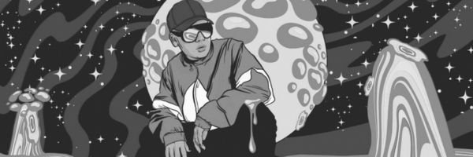

Vos podés ser el próximo artista
Este sueño recién comienza, y el próximo artista en lanzar el hit del año podrías ser vos. Bzrp, junto a su sponsor oficial Pepsi, se enorgullece en presentar el emocionante concurso "Adictiva como una Pepsi". Este certamen está diseñado para descubrir y dar visibilidad al mejor talento oculto del mundo, brindando a los aspirantes la oportunidad única de lanzar su tema en las plataformas oficiales de Bzrp.
Imaginate la posibilidad de grabar en un estudio de Buenos Aires, donde la música cobra vida. Además, el concurso no solo se limita a la grabación; también cubrimos todos los gastos de tu traslado. Como si fuera poco, los ganadores recibirán una beca para estudiar música en la prestigiosa UNA, lo que te permitirá perfeccionar tus habilidades y llevar tu carrera al siguiente nivel.
Y eso no es todo: ¡un increíble premio de $1.000.000 de pesos para el ganador! Lo mejor es que este valor puede ser mayor porque se le otorgan derechos de autor
a quien relice la canción y todas las ganancias (excluyendo un 10% de derechos de Bizarrap) serán para el artista.
¿Qué esperas para dar el siguiente paso en tu carrera musical? ¡Completa este formulario y únete a la aventura de tu vida!
La oportunidad de brillar está a solo un clic de distancia.